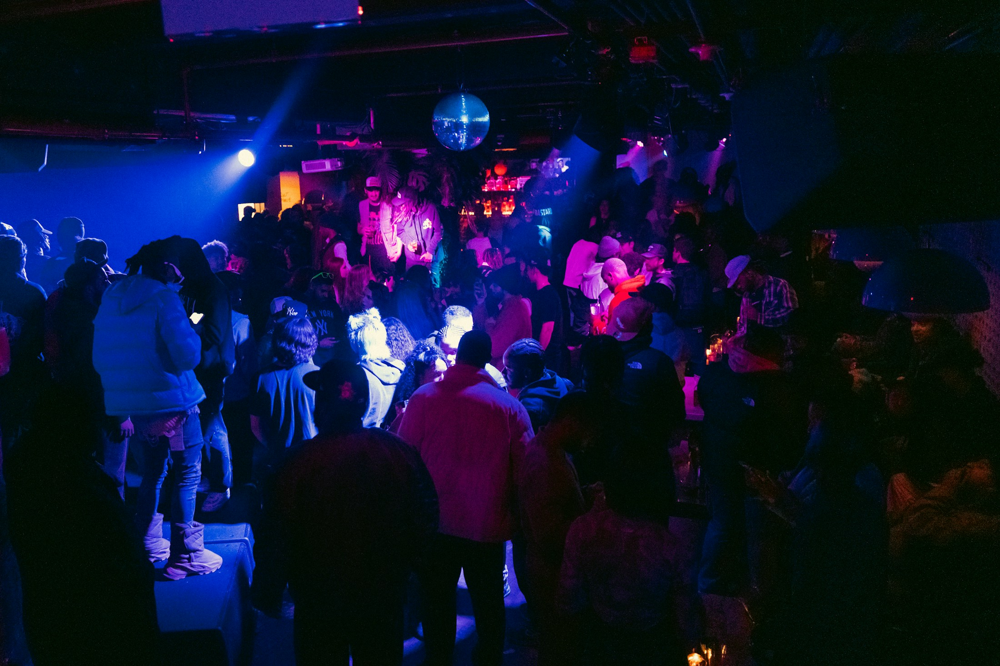

THAT
FRIDAY
FEELING
FRIDAY
FEELING
Friday at Replay.
A well-earned night out. Bring your friends for feel-good favourites and a proper start to the weekend.
Events & tickets
Your favourite music. Your favourite people.
A proper night out at Replay York.
A Friday catch-up. A Saturday celebration.
Your next good night starts here.
A well-earned night out. Bring your friends for feel-good favourites and a proper start to the weekend.
Events & ticketsBig choruses and dancefloor favourites, from the records you grew up with to the songs you still love.
Events & ticketsBirthdays, hen parties or a long-overdue get-together. Get in touch to plan your celebration in York.
Check the latest event listing for dates, opening times and entry prices. 18+ with photo ID.
Good music has a way of bringing everyone together.
Welcome to Replay, your feel-good nightclub in York. Five decades of party anthems, from disco and pop classics to the songs you can’t help singing along to.
Great company, a revolving dancefloor and a soundtrack worth staying out for. Come for a drink. Stay for one more song.
Follow Replay on InstagramMake yourself a regular. Join Replay on Klurrb for member tickets, entry benefits and VIP membership options.
Explore membership Free membership available. See current perks and terms on Klurrb.Find Replay on George Hudson Street, close to Micklegate and Ouse Bridge. Your next night out is closer than you think.
A question before your visit?
info@replayyork.co.ukFive decades of party and dance music, from nostalgic throwbacks and singalong favourites to today's big hits. Bring your best chorus.
Opening times and last entry can vary by event. Head to our latest event listings for the details of your night.
Replay is an 18+ venue. Bring your photo ID and check any additional entry requirements on your event listing.
We'd love to hear your plans. with your date and group size. Our team will confirm what is available.
Use our lost property form to report your missing item. Include the date you visited and a detailed description.
Get in touch at info@replayyork.co.uk before your visit so the team can help with your specific access requirements.